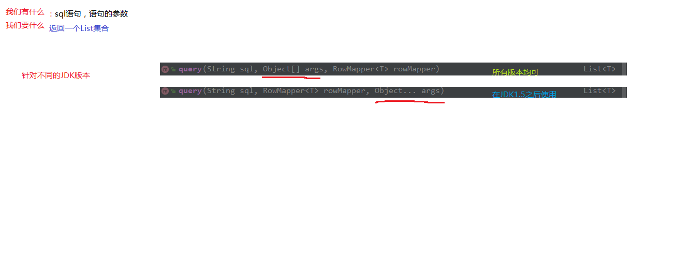

spring中的JdbcTemlate以及Spring事务控制
JdbcTemplate的概述和入门

1 | JDBC已经能够满足大部分用户最基本的需求， |
1 | public class JdbcTempDemo1 { |
JdbcTemplate在spring的ioc中使用
1 | <!--配置JdbcTemplate--> |
1 | //获取容器 |
JdbcTemplate的CRUD操作

1 | public class JdbcTempDemo1 { |
JdbcTemplate在Dao中的使用
1 | public class AccountDaoImpl implements IAccountDao { |
jdbctemplate和queryrunner的区别

JdbcDaoSupport的使用以及Dao的两种编写方式
使用xml配置时使用继承JdbcDaoSupport方式
使用注解配置时不要使用继承，因为JdbcTemplate是jar包中的类，只读属性不能更改
1 | /** |
1 | /** |
1 |
|
基于XML的AOP实现事务控制
1 | <!--配置事务管理器--> |
基于注解的AOP实现事务控制及问题分析

使用注解的时候，通知的执行会出现一些问题。
前置通知正常，但是后置和异常会出现在最终通知之前，导致每次执行完操作之后就释放了资源以及线程的解绑，使后置通知拿不到同一线程上的连接，导致事务提交失败。
这时，我们需要使用环绕通知来解决这个问题
1 | @Around("pt1()") |
spring基于XML的声明式事务控制
1 | <!-- 配置业务层--> |